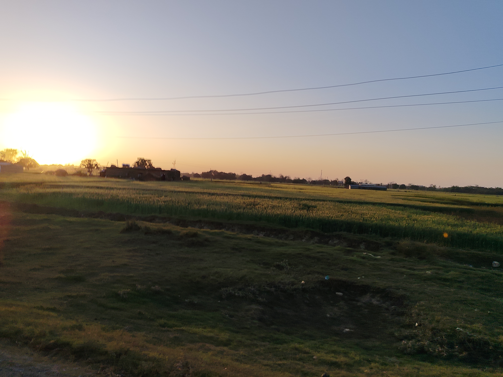
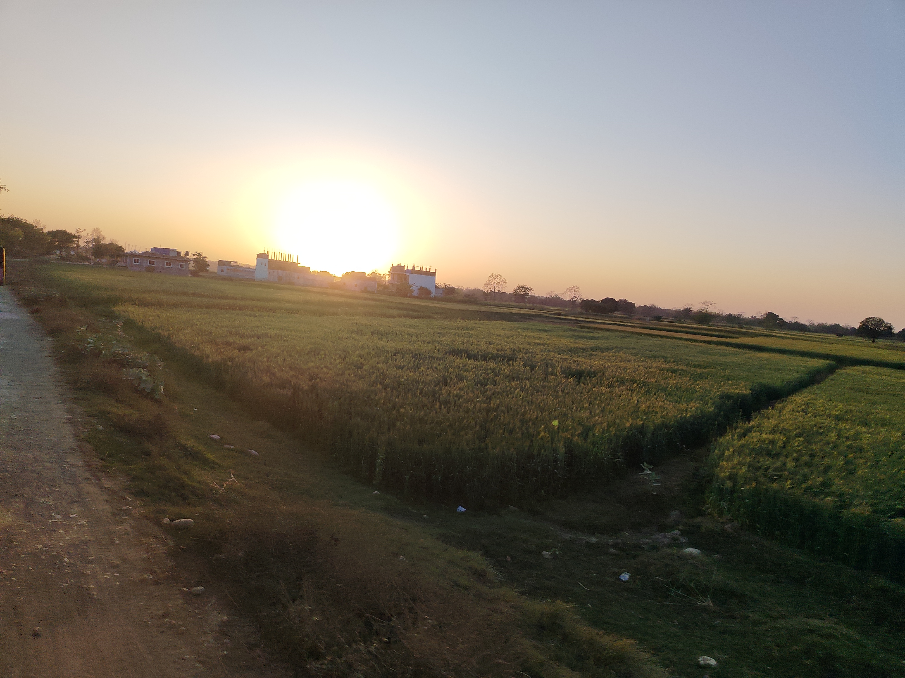

Fun Facts About Me! 🎉
1) I don’t act mature—I’m 17 but talk like a 10-year-old! 😄👶
2) Talking to girls is tough—my mind goes blank, and I start trembling! 😅🙈
3) I love AI and its applications—this site was built by AI itself! I brainstorm, xAI codes, and we perfect it together! 🤖😊
4) The deeper the dive, the richer the treasure… and I’m not talking about the ocean! 🌊💎
5) I love a good laugh! 😂🌟
6) I adore traveling to remote, green places like Shillong, Assam, and Ilam! 🌳✨



Sunset at green remote places (feels like heaven 😌)